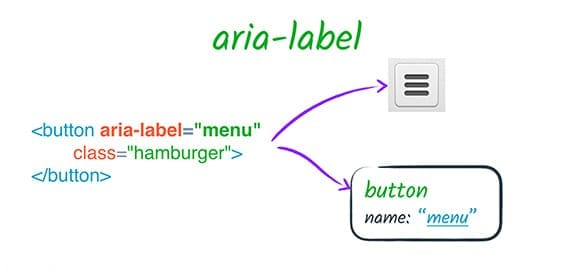

How?
How is ARIA Used
ARIA, is primarily used for those with disabilities,but is also very useful to those with visual impairments, developmental disabilities and motor impairments. People of this nature may rely more on technology to assist them in everyday tasks that may be simple to others. Commonly it allows you to add an attribute to an element, providing more information, assisting users, which in return, allows them to better understand and interact with any web page they may be using.And example of this would be:
Using the button element to display a menu and before closing it out, writing the name of the button tag in parenthesis as "menu".
